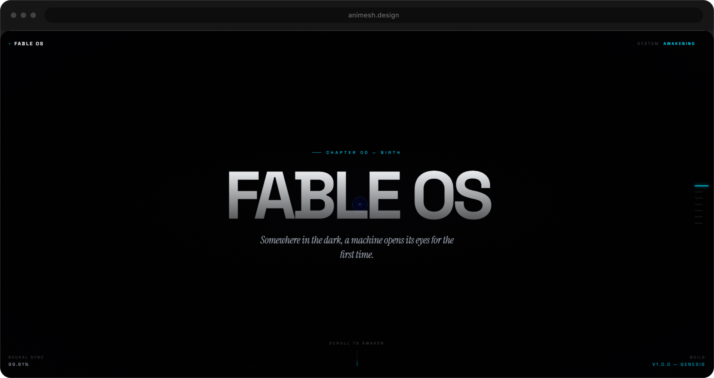
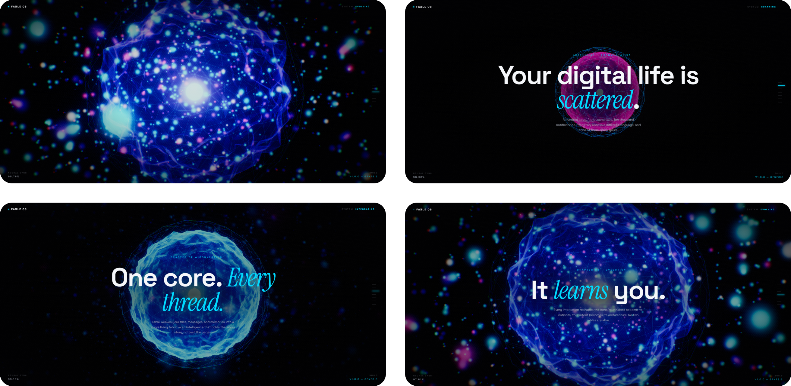
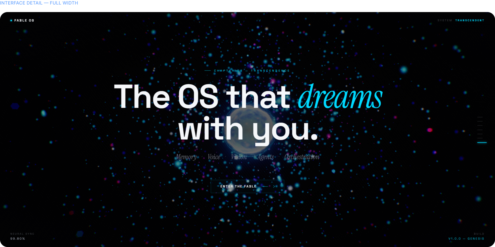
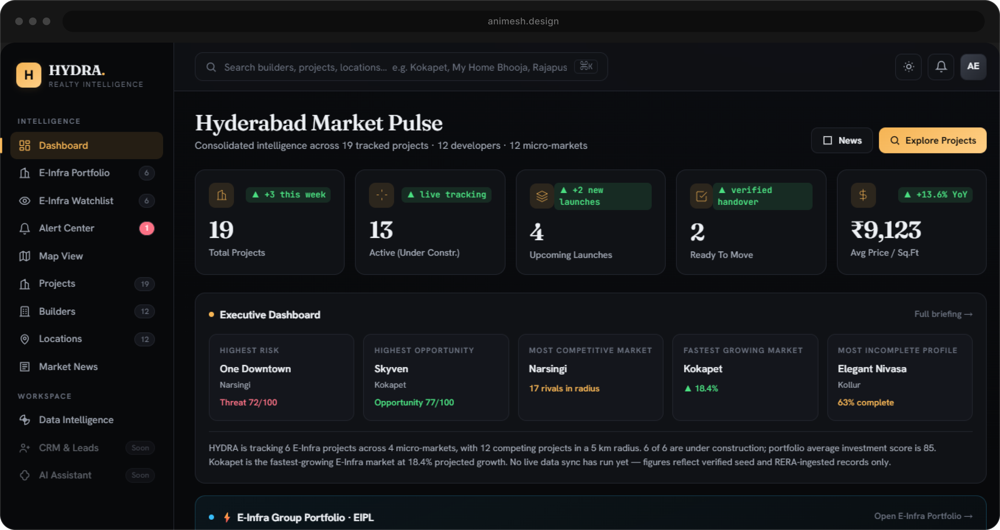
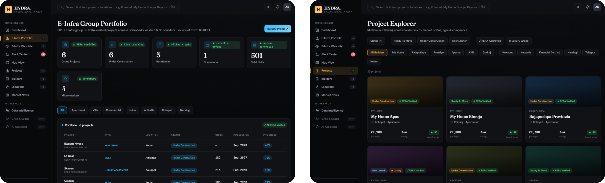
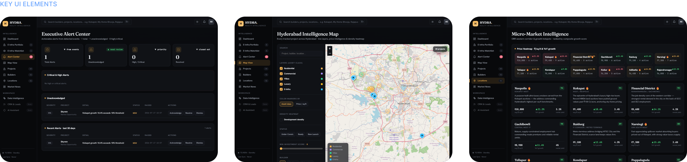

Creative Lab
Designing Beyond the Brief.
Great creative doesn’t begin in Photoshop. It begins with the right question. This is where concepts, systems, experiments, and AI-assisted workflows come together before they become finished work.
UI · Brand · Motion · Marketing
02 · Personal Concept
Fable OS
A personal AI operating system designed to orchestrate creative workflows, automate repetitive tasks, and turn fragmented tools into one intelligent workspace.



03 · AI Cinematic Storytelling
Autumn - an AI-assisted launch film
A cinematic launch film created using AI-assisted storyboarding, image generation, motion design, and editing - proving how modern creative pipelines can accelerate production without sacrificing quality.
- Creative Brief
- A launch film for Autumn Villas - cinematic, warm, grounded in place.
04 · Dashboard Exploration
Real Estate Intelligence Dashboard
A dashboard concept focused on simplifying construction, sales, and operational data into a single decision-making interface.



05 · Creative Workflow
From Idea to Execution
One connected pipeline - from research to final deliverable.
Research
Concept Development
- ChatGPT
- Claude
- Gemini
Image Generation
- ChatGPT
- Gemini
Creative Refinement
- Photoshop
- Lightroom
Interface Design
- Figma
Motion
- Premiere Pro
- After Effects
Final Deliverable
06 · Creative Toolkit
Tools I Reach For
AI
- ChatGPT
- Claude
- Gemini
- Midjourney
- Leonardo AI
Design
- Figma
- Photoshop
- Illustrator
Motion
- Premiere Pro
- After Effects
Development
- Cursor
- VS Code
- GitHub
07 · Design Philosophy
What Guides My Work
Strategy before aesthetics. Every decision should solve a problem.
AI amplifies creativity. It speeds execution, not thinking.
Build systems, not one-offs. Great brands scale through consistency.
Every interaction should have intent. Design is communication, not decoration.
Always be iterating. Creative work is never static.